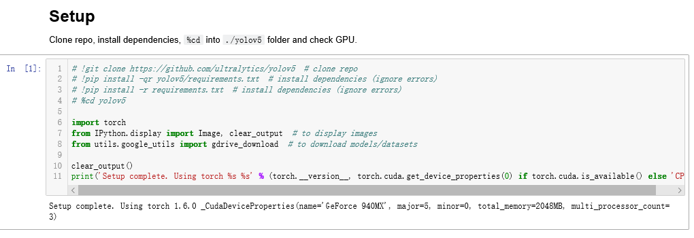

:)
yolo的大名早有耳闻 前几天尝试了一下
从github下载yolov5-3.0.zip
解压
requirements.txt:
1 | # pip install -r requirements.txt |
发现了一个tutorial.ipynb
使用jupyter notebook进入目录
在第一个格子注释掉一些代码，检查一下环境

cuda用的10.1 没什么问题
之前pytorch版本低了，升级之后就没问题了
提前在github上把weights下载好放到yolov5-3.0\weights下 不然会自动在Google Drive上下载，很慢的
这几个:
YOLOv5s YOLOv5m YOLOv5l YOLOv5x
测试：
1 | !python detect.py --weights yolov5s.pt --img 416 --conf 0.4 --source inference/images/ |
输出：
1 | yolov5-3.0\inference\images\bus.jpg: 416x352 3 persons, 1 buss, Done. (0.035s) |